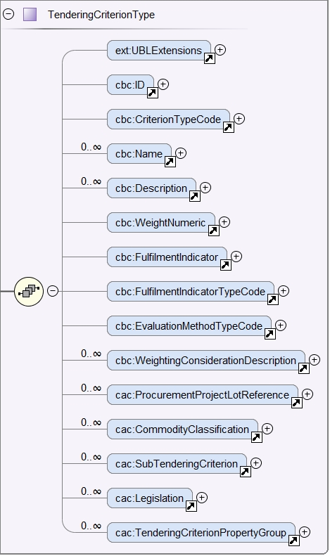

General behavior
Notice that:
-
One criterion may have descendent 'sub-criteria'. This is very useful to, for example, define national exclusion criteria that specialise the EU criteria defined in the Directive;
-
One criterion may refer to one or several pieces of legislation (EU, national, other);
-
One criterion must always contain at least one group of 'properties'. Properties may be informative captions; general requirements issued by the Member State or procedure-specific requirements specified by the buyer; and questions addressed to the economic operator;
-
One group of properties must always specify at least one 'property';
-
One group of properties may contain one or several 'sub-groups' of properties.
XSD Schema
This XSD Schema diagram shows a global view of the UBL 2.3 cac:TenderingCriterion component:

Figure 34. cac:TenderingCriterion - XSD Schema, global view
Expected elements
Table 20. Criterion, expected elements
Class name: |
cac:TenderingCriterion |
Definition: |
A tendering criterion describes a fact or a condition that is used by the contracting body to evaluate and compare tenders by economic operators and which will be used for the exclusion and the selection of candidate tenderers to the award decision. |
Business rule(s): |
BR-LOT-20, BR-LOT-30, BR-LOT-30-S20, Common (BR-TC-01) |
File: |
ubl-2.3/xsdrt/common/UBL-CommonAggregateComponents-Components-2.3.xsd.xsd |
Path: |
/QualificationApplicationRequest/cac:TenderingCriterion |
| Components | Type | Card | Description | Requirements |
|---|---|---|---|---|
cbc:ID |
Identifier |
1 |
A language-independent token, e.g., a number, that allows to identify a criterion uniquely as well as allows to reference the criterion in other documents. |
Information Requirement: tbr070-010. Rule: Each Criterion is defined in e-Certis and must use the UUID supplied by e-Certis. See also the spreadsheets ESPD-criterion. Rule scope: Common (BR-TC-02, BR-TC-12, BR-TC-13, BR-OTH-02) |
cbc:CriterionTypeCode |
Code |
1 |
A classification code defined by the ESPD-EDM to represent the criterion in the ESPD taxonomy of criteria. |
Information Requirement: tbr070-013 Rule: Compulsory use of codes coming from e-Certis, which are also used in the spreadsheets ESPD-criterion, e.g. crime-org, corruption, chain-manage) Rule scope: Common (BR-REQ-30, BR-REQ-30-S10, BR-REQ-30-S20, BR-REQ-40, BR-TC-03, BR-TC-04, BR-OTH-01, BR-OTH-01#7, BR-OTH-03) |
cbc:Name |
Text |
1 |
A short and descriptive name for a criterion. |
Information Requirement: tbr70-010 Rule: The name should match the one from e-Certis, which should be the same as in the in the spreadsheets ESPD-criterion], e.g. 'Convictions', 'Corruption', 'Fraud', 'Financial ratio', 'Subcontracting proportion’etc.). Rule scope: Common (BR-TC-05) |
cbc:Description |
Text |
1..n |
An extended description of the criterion. |
Information Requirement: tbr70-010 Rule: The description should match the one from e-Certis, which should be the same as in the in the spreadsheets ESPD-criterion], e.g. 'Has the economic operator itself or any person who is a member of its administrative, management or supervisory body or has powers of representation, decision or control therein been the subject of a conviction by final judgment for participation in a criminal organisation, by a conviction rendered at the most five years ago or in which an exclusion period set out directly in the conviction continues to be applicable? As defined in Article 2 of Council Framework Decision 2008/841/JHA of 24 October 2008 on the fight against organised crime (OJ L 300, 11.11.2008, p. 42).'. Rule scope: Common (BR-TC-06, BR-TC-19) Note: The UBL specification allows always multiple lines of text for the component cbc:Description. This feature can be used to split long descriptions into multiple lines, especially when the description contains enumerations (see the criterion "Misinterpretation" for an example). |
cac:ProcurementProjectLotReference |
Class |
0..n |
One or more of the procurement project lots to which this criterion can be related to. |
Information Requirement: (see section [lot_management]) Rule: This element is mandatory for all Selection Criteria with cardinality 1..n because different Selection Criteria can be associated with different procurement lots. This element is not necessary for exclusion grounds because exclusion grounds are applied to all procurements. |
cbc:SubTenderingCriterion |
Class |
0..n |
One or more descendant criteria used namely to define a national exclusion criterion that specialises a more generic criterion like a EU exclusion criterion defined in the Directive. |
Information Requirement: tbr70-013 Rule: None. Beware that a sub-criterion 'is a' criterion, therefore no need to list these elements at new. See XML examples in the section about exclusion criteria about how to define a sub-criterion. |
cac:Legislation |
Class |
0..n |
A reference to the legislation related to the Criterion. |
Information Requirement: tbr070-013 Rule: None. See table below with the elements of this class. |
cac:TenderingCriterionPropertyGroup |
Class |
1..n |
The first level group of properties and sub-groups of properties in the structure of a criterion. |
Information Requirement: tbr070-013 Rule: None. Beware that in previous versions of the ESPD-EDM this was termed "RequirementGroup". |